昭和21年に建てられた家です。貸切ですので、他のお客様と会うことはありません。
上田駅から車で約15分。山あいにひっそりとたたずみ、雑木林や棚田に囲まれた静かな里山の宿です。柱や梁には、囲炉裏の煤が今も残っています。
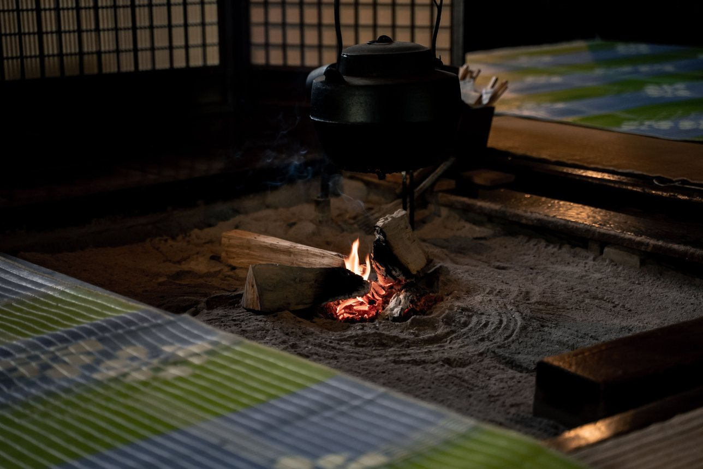
川魚の塩焼き、季節の野菜の煮物、お味噌汁を、18:00からお出しします。味噌は自家製です。囲炉裏を囲みながら、ゆったりとお召し上がりください。
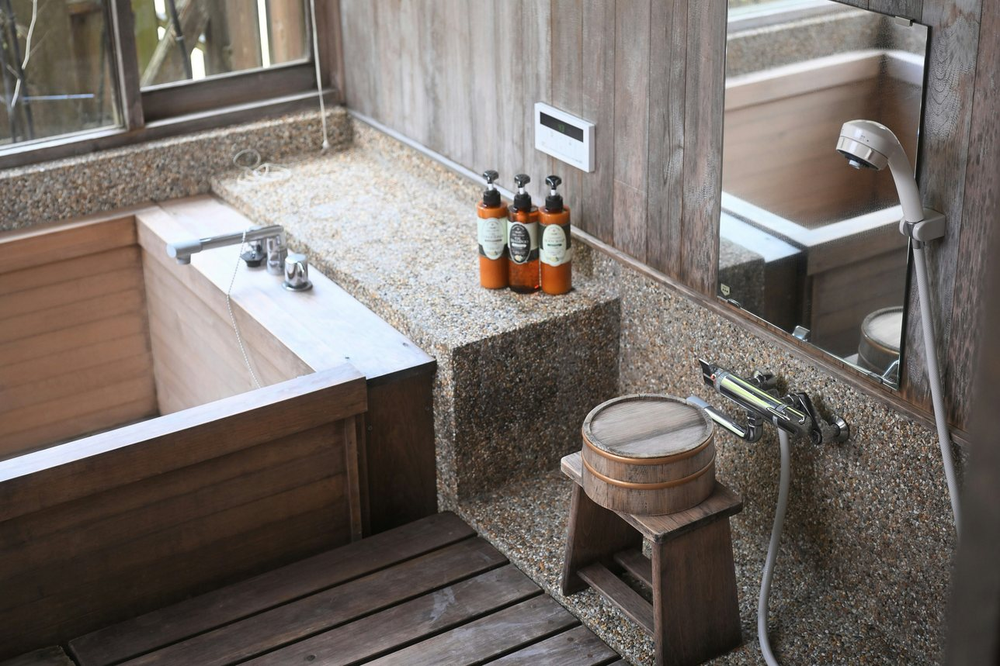
窓の向こうに広がる雑木林を眺めながら、心ゆくまでおくつろぎください。お風呂は17:00から、お好きな時間に何度でもご利用いただけます。
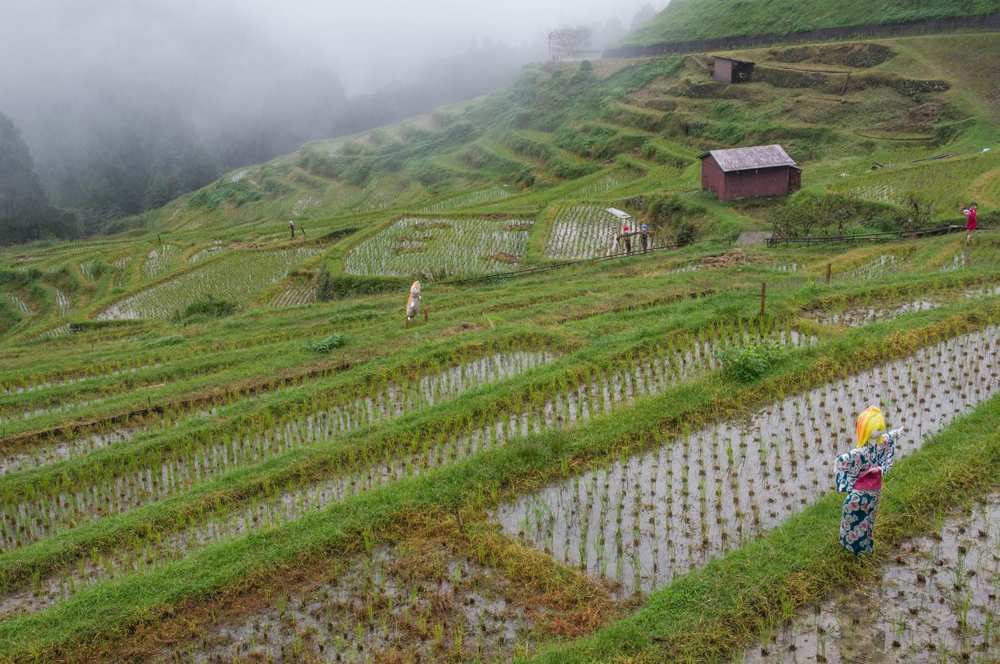
夜明けの棚田が霧に包まれる日があります。早起きして散歩をされるお客様もいらっしゃいます。
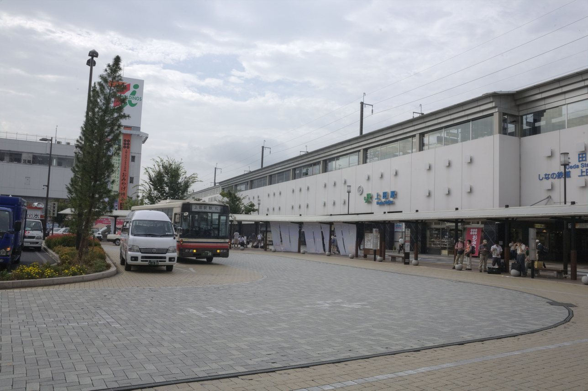
15:15に上田駅までお迎えに参ります。お帰りの日は、10:00に当宿を出発し、上田駅までお送りいたします。
お料理
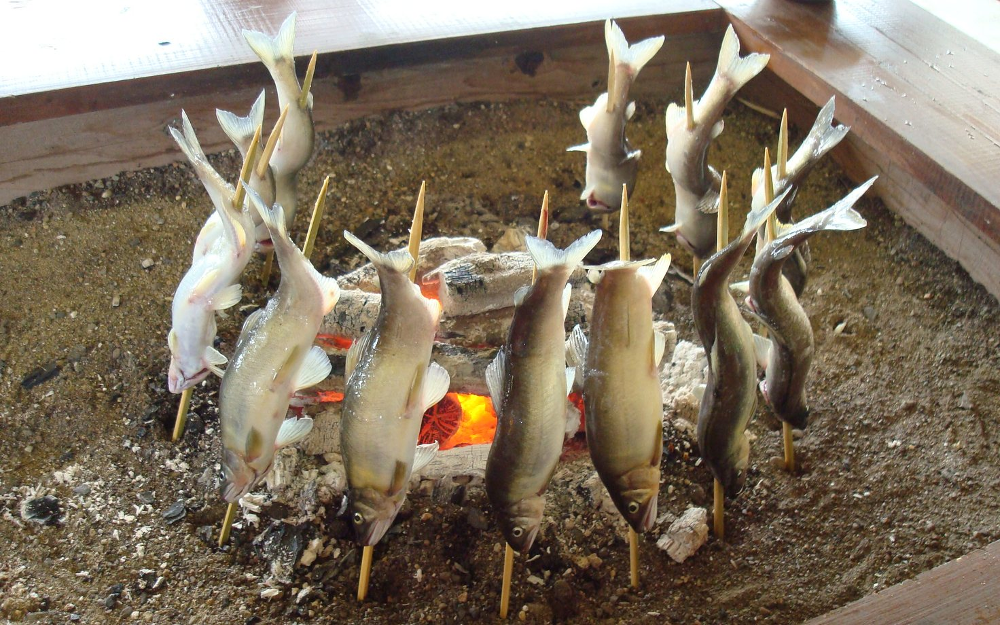
春は岩魚、夏は鮎。どちらも囲炉裏で香ばしく焼き上げます。
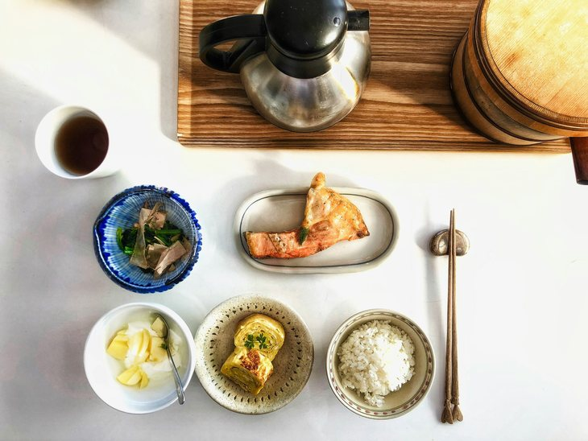
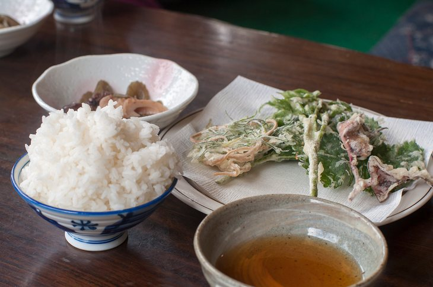
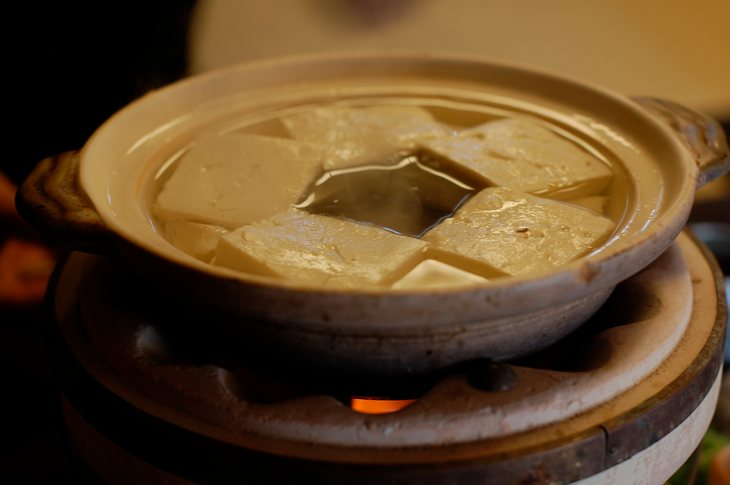
アレルギーや苦手な食材がございましたら、ご予約時にお知らせください。3歳以上のお子様にも大人と同じお料理をお出しします。量はご希望に合わせて加減いたします。
館内のご案内
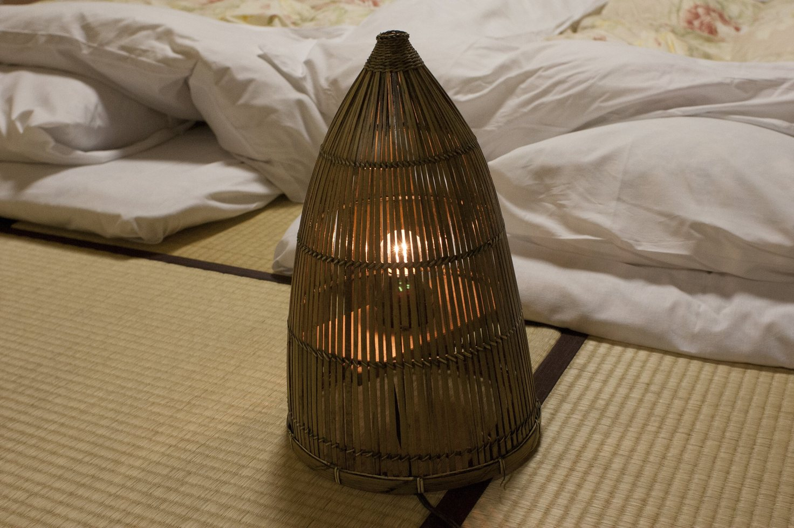
ご人数に合わせてお布団をご用意いたします。
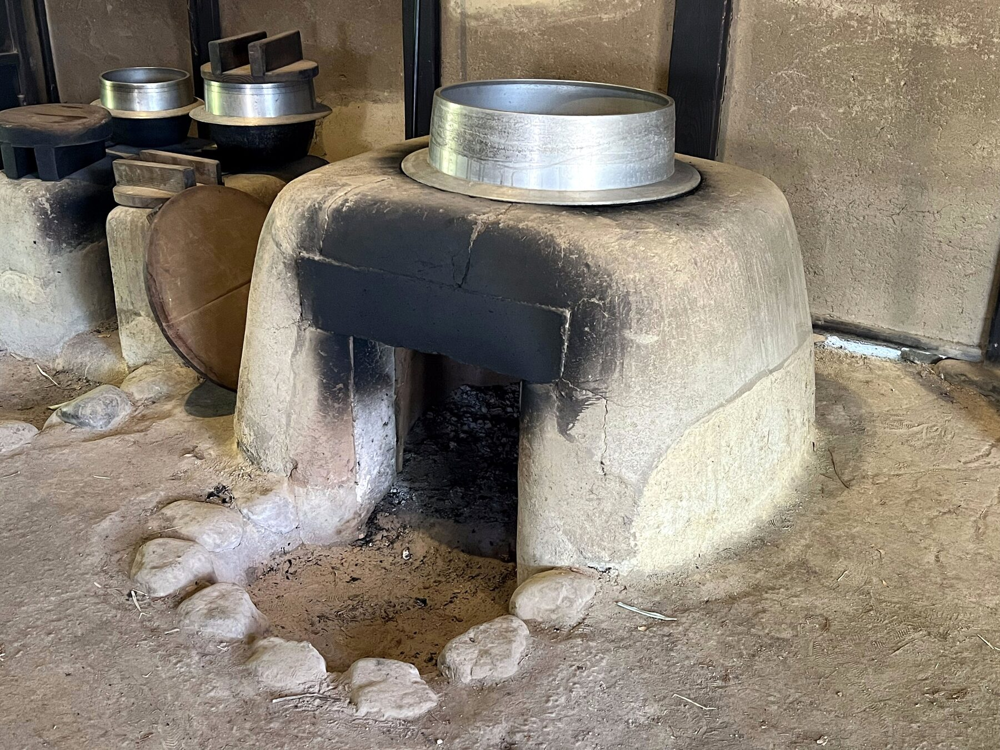
過ごし方
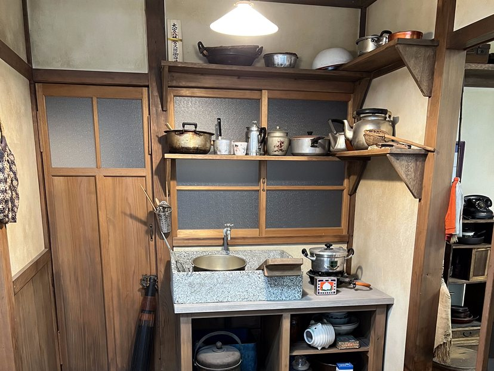
冷蔵庫、炊飯器、食器などはご自由にお使いいただけます。食材・調味料はお客様ご自身でご用意ください。
38,000円〜（1棟・2名様・税込）
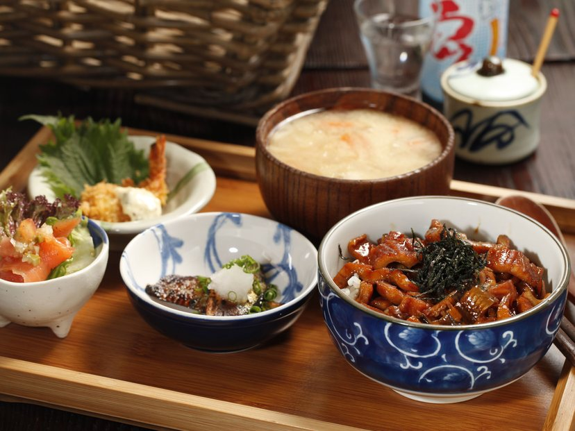
夕食には季節のお料理をお出しします。朝食はお櫃のご飯と焼き鮭です。日によって献立が変わります。
62,000円〜（1棟・2名様・税込）
| ご人数 | 素泊まり | 1泊2食付 |
|---|---|---|
| 2名利用 | 38,000円 | 62,000円 |
| 3名利用 | 47,000円 | 78,000円 |
| 4名利用 | 56,000円 | 94,000円 |
| 5名利用 | 65,000円 | 110,000円 |
| 6名利用 | 74,000円 | 126,000円 |
金曜・土曜・祝前日は、一律8,000円を加算します。年末年始（12月29日〜1月3日）は曜日を問わず、一律20,000円を加算します。
表示料金は1泊あたりの貸切料金です。1名様でのご利用も、2名様と同じ料金です。
お子様料金の設定はございません。3歳以上のお子様はご人数に含みます。
寝具代・清掃料は宿泊料金に含まれています。連泊の場合、2泊目からは1泊につき5,000円を割り引きます。
大人4名様が平日に1泊2食付でお泊まりの場合、宿泊税を含めた総額は94,800円です。
年末年始のご予約を承っております。
新米のご案内｜集落の棚田では、9月の末に稲刈りが行われます。その棚田で収穫した新米を、10月のご宿泊からお出しします。
長野県宿泊税のお知らせ｜6月1日のご宿泊分から、宿泊税を申し受けます。詳しくは施設概要をご覧ください。
お電話またはフォームでお問い合わせください。その際、ご希望のご宿泊日とご人数をお知らせください。
お子様連れでもご宿泊いただけます。囲炉裏には火が入っておりますので、そばではお子様から目を離さないようお願いいたします。
コンビニ・スーパーは上田市街にございます。素泊まりのお客様は、お越しの途中で食材をお求めください。当宿から車で約10分のところに農産物直売所がございます。
上田城跡公園は上田駅から徒歩約12分、別所温泉は上田電鉄別所線で約30分です。観光の際は、上田駅との間を送迎いたします。ご希望の時刻を事前にお知らせください。
当宿でお預かりいたします。送り状の備考欄にご宿泊日とお名前をご記入のうえ、ご宿泊日の前日必着でお送りください。お帰りのお荷物は、着払いで発送いたします。
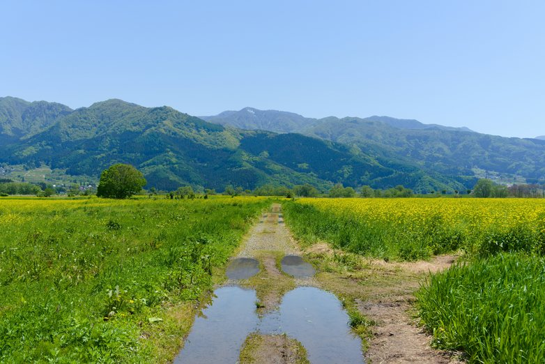
古民家 穂ノ家
長野県上田市（架空の住所です）
TEL 0268-00-0000
上田駅から車で約15分の集落に当宿がございます。
上田駅周辺の地図を開く
所要時間は、東京方面は練馬IC、名古屋方面は名古屋ICからの目安です。冬期（12〜3月）は冬用タイヤかチェーンをご用意ください。集落の中は道が入り組んでおりますので、詳しい道順はご予約の確定後にご案内いたします。
上田駅からは、当宿の送迎の車をご利用ください。
当宿では、お問い合わせや宿泊プランへのお申し込み等を通じて、お客様のお名前、お電話番号、メールアドレス、ご宿泊日・ご人数、ご希望のプラン・ご質問内容等の個人情報をご提供いただく場合があります。
お預かりした個人情報は、お問い合わせ・ご宿泊への対応にのみ利用いたします。
お客様からお預かりした個人情報を、個人情報保護法その他の法令に基づき開示が認められる場合を除き、ご本人様の同意を得ずに第三者に提供することはありません。開示・訂正・削除をご希望の場合は、ご本人様よりお申し出ください。
個人情報の取扱いに関するお問い合わせは、当宿（0268-00-0000）までお願いいたします。